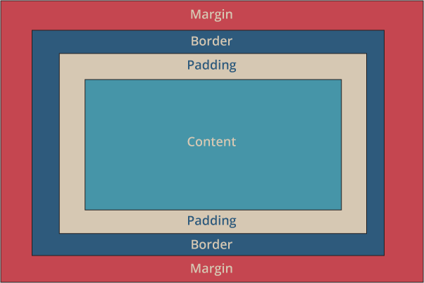

Why is JavaScript so Popular in Web Development?
Background
In 1995, most of us were watching the Teenage Mutant Ninja Turtles and practicing for our next Little League game. But in the small, burgeoning town of Mountain View a group of developers was working on something that would revolutionize web development. This something was JavaScript, a dynamic programming language developed for both client and server side use. Today, JavaScript is easily one of the web's most popular languages, but what makes it so special? Conventional wisdom would suggest that a 20 year old computer language would, by now, be outdated and replaced by the next big thing. But it remains, to this day, one of the most widely used scripting languages.
Speed
One of JavaScript's biggest advantages is speed. Many dynamic web languages are strickly server-side - meaning all of the code is executed by the web server, which could be half-way across the world. In constrast, JavaScript code can be interpreted and run locally within a user's broswer, omitting the time that it takes for requests to be sent to and from the server. It can also detect changes that the user makes to a webpage in real-time and alter the content that page displays without re-loading, providing seamless interaction for web applications.
Versatility
JavaScript also has a distinct advantage in that it can be deployed both client-side AND server-side, producing valuable synergy for developers. Using the same language on both sides ensures compatibility and reduces errors. It also allows developers to focus on learning just one language, instead of switching back and forth between multiple languages that might have completely different syntax and functionality.
Inertia
Without its merits, JavaScript would have died out long ago. But there is another reason that it has endured so long: inertia. JavaScript is the most widely supported client-side language, making it accessible to more people than any other language. In its infancy, it was supported and pushed forward by some of the biggest names in technology. We see this everywhere in tech. Take the QWERTY keyboard, for example. Other, more efficient keyboard setups exist, but the cost of transitioning an entire generation of people to a different keyboard configuration would be enormous. Is it possible to develop a better scripting language than JS? Yes. Will it happen, one day? Certainly. But for most developers, the wide support of and resources available for JavaScript makes it the best choice out there - for now.
Programming - a Collaborative Process
Pair Programming
Pair programming can be an incredibly productive tool, but it doesn't come naturally to everyone (it certainly didn't to me). Going into my first pairing session, I was surprised how nervous I was - Would my coding skills be able to keep up with my partners? Would I drag down the team? Working as a consultant, I am expected to be an expert in what I do for my clients. It's certainly okay that I don't know everything, but I'm never in a situation where the material is new to me and I have to figure out things on the fly. That sort of uncertainty plagued me on the way into my first pairing session, but it was quickly alleviated.
What I found when pairing with other students in Phase 0 was an open, non-judgemental culture. My fellow boots and I have all been at similiar experience levels, and have been very willing to share knowlege and help eachother out. Even more, seeing other people's passion for coding has made the experience FUN! We feed off of eachother's motivation and our pairing sessions end up lasting longer than the required/alotted time. Nothing has been frustrating or difficult about the process - it takes a little time to get used to the driver and navigator roles, but I think that will become natural with practice.
Feedback
Constructive feedback can greatly accelerate the learning process, but it takes work to master. In fact, both giving and receiving feedback can be a stressful undertaking.
When we receive feedback about ourselves, it's common to focus on the negative aspects and sometimes it's difficult not to take things personally. But it's important to remember that we are here to learn, and a quick feedback loop will help that emmensely. We're all new to web development (especially to pair programming), and no one is expected to be a master at it. As long as we work to incorporate other's specific, actionable suggestions, we will develop into great pair programming partners. The feedback I've received personally has helped a lot - both in enforcing my good habbits, and in correcting some bad ones. I've learned that people appreciate it when you are open and share the resources you've found. I've also learned that when I'm in the driving role, I sometimes over-step my bounds and don't give the navigator enough time to make decisions. This type of feedback was specific, actionable, and kind, and will make a positive impact on my future pairing sessions
Writing feedback can be even more difficult than receiving it. The first thing that I've noticed is that you need to do feedback quickly! In order to pinpoint productive examples, it really helps that your pairing session is fresh in your mind. The most difficult aspect of giving feedback has been finding constructive things to say. All of my pairing sessions have been great, and often it's been difficult for me to find anything negative about the experience. I've discovered that comments don't always have to be negative to be constructive. Pointing out a specific, actionable thing that someone did well can be just as important as pointing out something that they need to work on. Showing someone that their actions have had a positive influence on you will re-enforce that behavior and encourage them to continue it in future pairing sessions.
CSS Margins, Borders and Padding
Have you ever spent hours painstakingly planning the layout of your content, only to find, once you code it up, that all of your elements don't fit? Margins, Borders and Padding can help us fine tune the style of our webpages, but we need to account for all of them when spacing out our content.

Margins
Margins are transparent and used to add spacing between different parts of your content. Common examples you may have seen are the space betweean a header and the main body of content, or the area between two pictures in a thumbnail gallery. Margins can be applied to any and all sides of an object, and can be expressed in em, pixels, or percentages.
Borders
Borders are meant to frame your content. You can style them in many different ways including solid, dashed, dotted and double lines. Borders can also be transparent, display an image or take on a number of different 3D properties. They can be expressed in any width and for any or all sides of your content.
Padding
Padding is used to put space between your content and and its border; it is frequently used to keep text from running all the way to the edges of a div. It's easy to get confused - if you think of a modern word processor, padding would actually represent the 'margin' property of your document. Padding can be expressed in em, pixels or percentages and will take on the background color of your content area.
Because padding is transparent and located inside of the border, many people forget to consider its width when developing webpage layouts. When you are determining the spacing of your content - remember! Margins, Borders, and Padding all add to the object's width on the page.
Comparing Websites
Sound Cloud
Sound Cloud is one of my favorite websites because of the content it serves. While other music applications specialize on serving mainstream songs (Spotify), Sound Cloud is a great place to find obscure remixes and original tracks from artists all over the world.
Once signed into Sound Cloud, users are routed directly to a homepage (soundcloud.com/stream) designed for them to discover, listen to, and share music. The homepage is laid out well, drawing immediate attention to the main content area which features a 'newsfeed' of songs pulled from past listening history and friends' recommendations. Sound Cloud uses the burnt orange color of their logo throughout the page to highlight their most important features, such as the play button for each song.
This music sharing website employes a number of tools to make their user experience as simple as possible, starting with the gloabl search that is available from any page in the main header. Each song served to users in the newsfeed is accompanied by a robust set of features including sharing, adding to playlists, liking, re-posting, and downloading (if available). This setup allows users to utlize 90% of the site's functionality through one central dashboard. A list of the user's favorite songs and recommended artists are available beside the newsfeed, making their homepage the one-stop-shop for all of your Sound Cloud needs.
Whiskey Militia
Whiskey Militia is the premier deal-of-the-day website for board sports enthusiasts. In fact, I had to stop visiting the site regularly becuase it was impossible for me to go there without buying something.
When a user arrives at whiskeymilitia.com, thier attention is immediatly drawn to the current deal - a piece of boarding apparal or hard goods which lasts anywhere from 1 to 15 minutes. Aside from a few advertisements, the only objects visible 'above the fold' are the main header, a section with purchasing options, and the focal point - a large, colorful picture of whatever item is currently on sale. If a user expands the width of their browser window, they will see that a background image takes up any space not covereed by the main container. Although using an image like this could hinder load time (the image is 329kb, thanks chrome dev tools) it isn't aesthetically un-pleasing and doesn't pull focus away from the item on sale.
Because Whiskey Militia's user experience is centered around selling just one item at a time, they litter the remainder of realestate with advertisements in a shameless attempt to intice those uninterested by the current deal. Upon closer inspection of the home page, users will find no less than 8 ads visible above and below the fold, surrounding the featured item on three (sometimes all four) sides. While this feature may sound unpleasant, the ads are certainly easy to avoid and cause no inconvenience for experienced user. In fact, once you are familiar with the layout of the site, you will find the majority of your visits to whiskeymilitia.com lasting just one second or less.
New York Times
nytimes.com is the digital edition of one of America's oldest newspapers, continually published for over 160 years.
Upon arriving at the New York Times homepage, users are greeted to a grid-like structure of news articles similiar to what they would see in print. A simple white background overlaid with black text allows the bold headlines and carefully selected pictures to stand out, drawing the reader's attention. Above the fold, a snapshot of the homepage reveals just three small adertisements, all unimposing and carefully tucked away into separate corners. Overall, the website is aesthetically pleasing and simple enough to keep users focused on just one thing - reading the news.
Categories of news are conveniently available in the main header, providing an easy way for readers to navigate around and discover the types of articles they are interested in. The majority of content available is in text form, which readers will appreciate cosnidering that most videos require the user to view a 30-second ad before getting to any meaningful content. Perhaps the most useful feature of the site, or of any news site, is its RSS feed. The New York Times offers nearly 150 different RSS news feeds allowing users to collect, aggregate, filter and view NYT content in the format of their choosing. It might not keep me going back to nytimes.com, but it will certainly work to keep me as a dedicated reader. And if there's ever a day that I don't have internet access, I might even buy a newspaper.